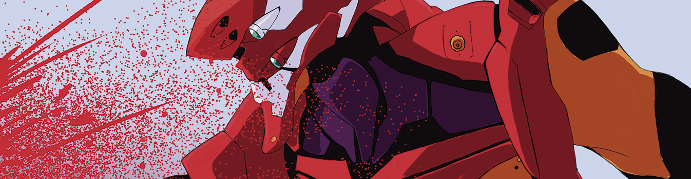
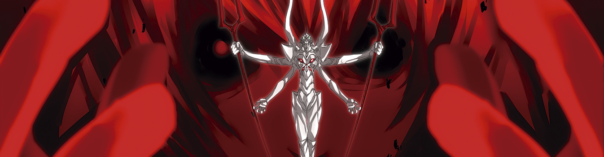

Neon Genesis Evangelion es una serie de animé japonesa que ha alcanzado el estatus de culto. Aunque su trama comienza en un futuro distópico, su riqueza de personajes y la evolución de su argumento la han elevado a un nivel de calidad excepcional.


Los Evas: La única forma de derrotar a los Ángeles es mediante los Evas, robots del tamaño de edificios que solo pueden ser pilotados por preadolescentes. El protagonista, Shinji Ikari, se convierte en el piloto de la unidad Evangelion 01.